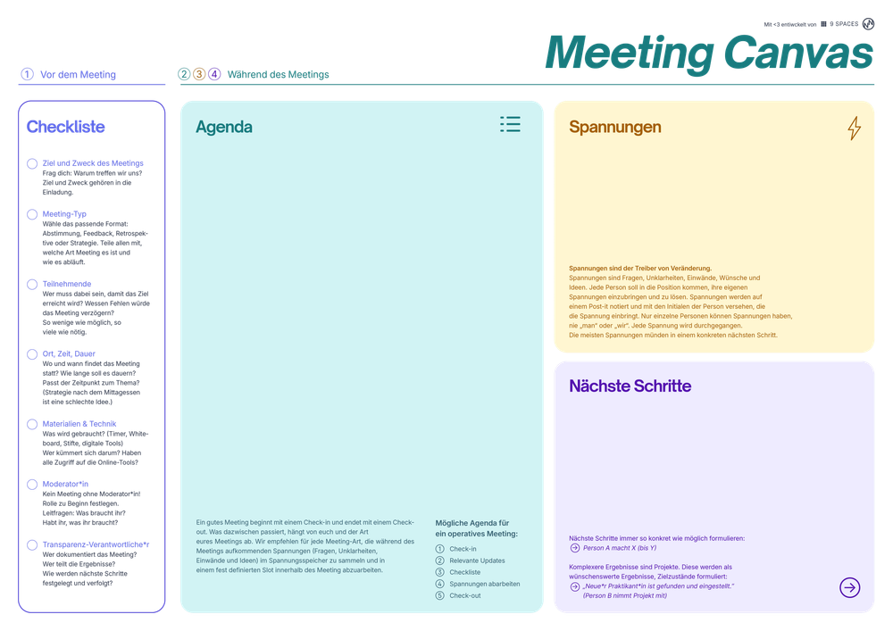

Mit der Academy erhaltet ihr im Business-Plan praxisnahe Lernmodule rund um Facilitation und wirksame Transformation.
Gemeinsam mit 9 Spaces zeigt Plan International Deutschland, wie wertebasiertes Arbeiten Orientierung gibt – nach innen wie nach außen.

Ein Template, das dir dabei hilft, richtig gute Meetings vorzubereiten.
Zwei kleine Gewohnheiten, die jeden Arbeitsalltag grundlegend verändern.
Ein Tool, das euch im Team dabei hilft zu bewerten, wie viel Zeit ihr in Meetings verbringt – und was sich daran ändern soll
Ein Tool, das dabei hilft, komplexe Projekte zu koordinieren und ganzheitlich weiterzuentwickeln